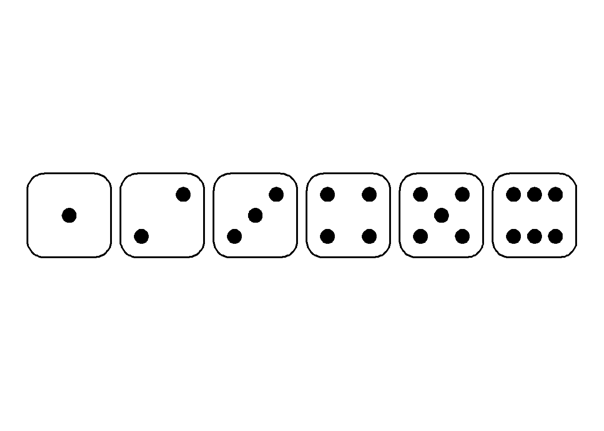
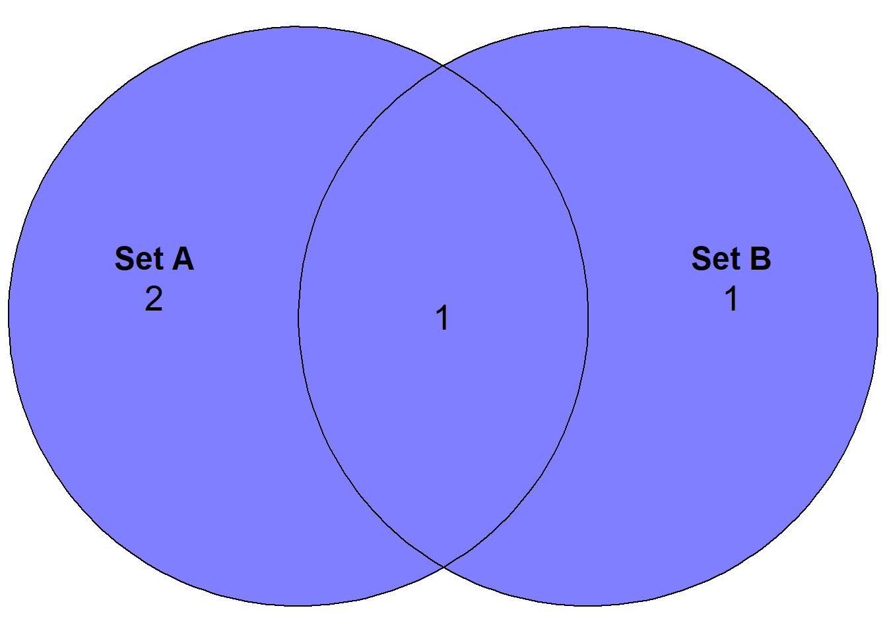
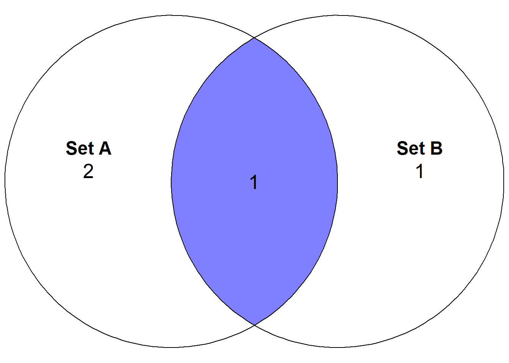
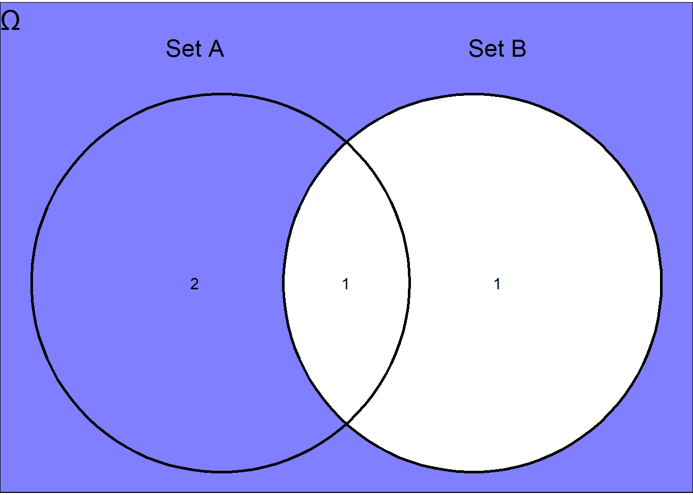
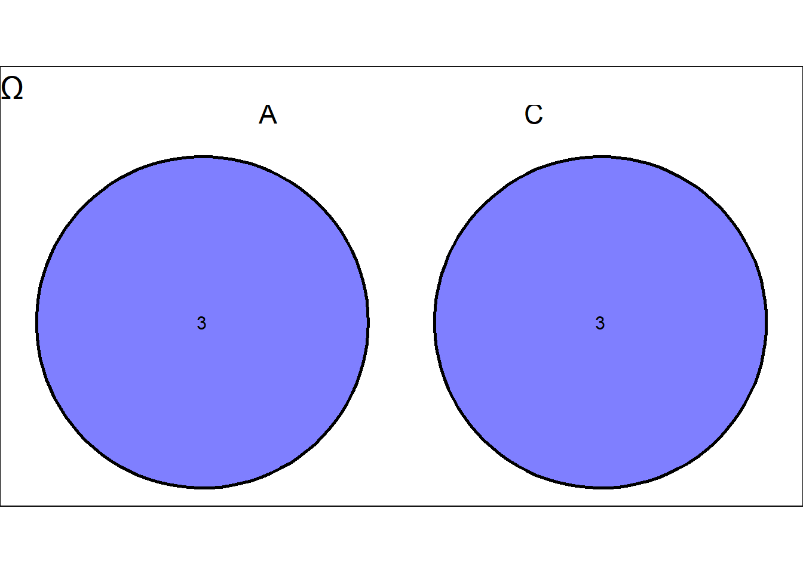
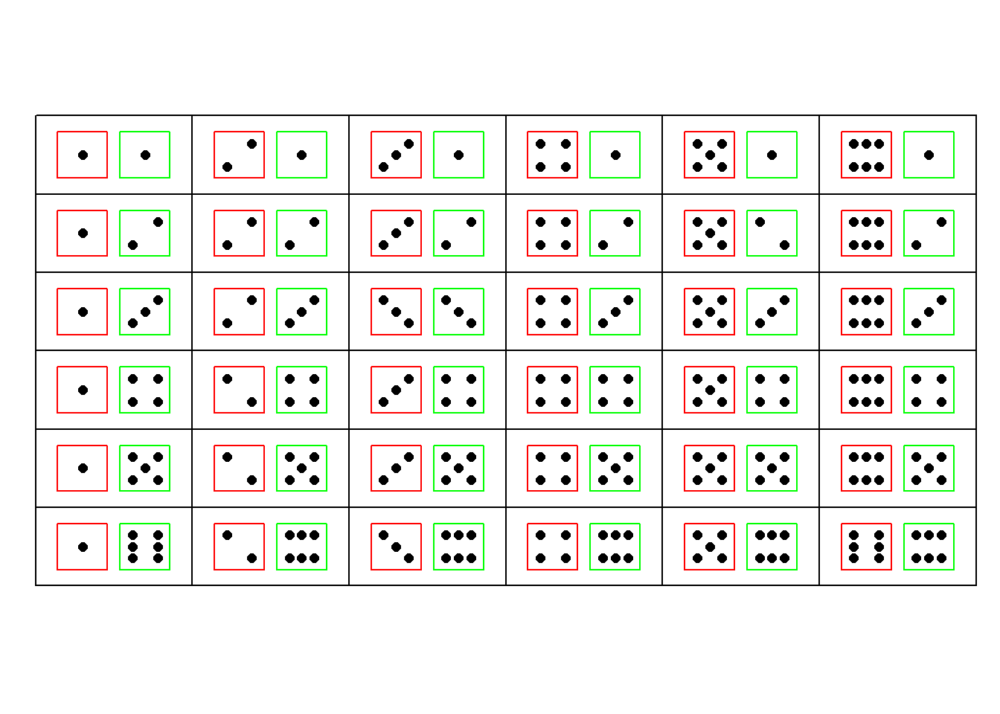

# dice graphs
library(tidydice)
# venn diagrams
library(ggvenn)
library(ggVennDiagram)
library(TeachingDemos)
#library(dice)14 Probability and Distributions
When we have finished this Chapter, we should be able to:
14.1 Packages we need
We need to load the following packages:
14.2 Sample Space and Random Events
Both deterministic and stochastic phenomena drive the everyday life.
A deterministic phenomenon (process or experiment) always produce the same outcome each time it is repeated under the same conditions.
A random phenomenon (process or experiment) is characterized by conditions under which the result cannot be determined with certainty before it occurs, that is, one of several possible outcomes is observed each time the process or experiment is repeated. For example, when a coin is tossed, the outcome is either heads H or tails T, but unknown before the coin is tossed.
The sample space Ω is defined as the set of all possible outcomes of a random experiment. For example, if we roll a 6-sided die, the sample space is the set of the six possible outcomes, Ω ={1, 2, 3, 4, 5, 6} (Figure 14.1).
force_dice(1:6) |>
plot_dice(detailed = TRUE, fill_success = "white") +
theme(plot.title = element_blank())
Different random experiments have different sample spaces that can be denoted in an equivalent way (flipping a coin: Ω ={H, T}, flipping two coins: Ω ={HH, HT, TH, TT}, testing for possible genotypes of a bi-allelic gene A: Ω ={AA, Aa, aa}).
A random event (henceforth called event) is denoted by a capital letter such as A, B, or C and is a sub-set of sample space Ω, including a number of possible outcomes of the experiment. For the example of the rolling die, the event “even number” may be represented by A = {2, 4, 6} which is a sub-set of Ω (A ⊂ Ω), and the event “odd number” by B = {1, 3, 5} which is also a sub-set of Ω (B ⊂ Ω). In the case of flipping two coins, an event could be that exactly one of the coins lands Heads, A = {HT, TH} or the event could be that at least one of the coins lands heads, B = {HH, HT, TH}.
If an event consists of a single outcome from the sample space, it is termed a simple event. For example, the event of getting the number 1 on rolling a die, denoted as A = {1}. If an event consists of more than a single outcome from the sample space, it is called a compound event such as rolling a die and getting an even number, A = {2, 4, 6}.
Important
For each experiment, two events always exist:
the sample space, Ω, which comprises all possible outcomes.
the empty set = ∅, that contains no outcomes and it is called the impossible event.
14.3 Operations of events using set theory and Venn diagrams
Union of Events: A∪B
The union of the events A and B, denoted by A∪B, is the collection of all outcomes that are in A or in B or in both of them and it is also an event. It will occur if either A or B occurs (the symbol ∪ is equivalent to OR operator).
Example
In the experiment of rolling a die, let’s consider the events A = “the number rolled is even” and B = “the number rolled is less than three”.
A <- c(2, 4, 6) # A = {2, 4, 6}
B <- c(1, 2) # B = {1, 2}
union(A, B) # A∪B = {2, 4, 6, 1} [1] 2 4 6 1Show the code
# List of items
x <- list(A = A, B = B)
yes <- "#7F7FFF"
no <- "white"
p <- ggVennDiagram(x, label = c("count")) +
labs(title = "Ω") +
scale_color_manual(values = c("black", "black")) +
theme(legend.position = "none",
plot.title = element_text(size = 20),
plot.background = element_rect(fill = "white"))
p$layers[[1]]$mapping <- aes(fill = name)
p + scale_fill_manual(values = c(A = yes, B = yes, A..B = yes))
Intersection of Events: A∩B
The intersection of A and B, denoted by A∩B, consists of all outcomes that are in both A and B (the symbol ∩ is equivalent to AND operator). That is, the events A and B must occur simultaneously.
Example
intersect(A, B)[1] 2Show the code
p + scale_fill_manual(values = c(A = no, B = no, A..B = yes))
Complement Events: \(A^c\)
The complement of an event A, denoted by \(A^c\) or \(\bar{A}\), is also an event and consists of all outcomes of the sample space Ω that are not in A.
Example
sample_space <- c(1, 2, 3, 4, 5, 6)
setdiff(sample_space, A)[1] 1 3 5Show the code
p + scale_fill_manual(values = c(A = no, B = yes, A..B = no)) +
theme(plot.title = element_text(size = 20),
plot.background = element_rect(fill = "#7F7FFF"))
Mutually exclusive events
Let’s consider the events A = “the number rolled is even” and C = “the number rolled is odd”.
The events A and C are mutually exclusive (also known as incompatible or disjoint) if they cannot occur simultaneously. This means that they do not share any outcomes and A∩C =∅.
Example
A <- c(2, 4, 6)
C <- c(1, 3, 5)
intersect(A, C) numeric(0)Show the code
# List of items
x2 <- list("A" = A, "C" = C)
ggvenn(x2, fill_alpha = 1, auto_scale = T, show_elements = F, show_percentage = FALSE) +
labs(title = "Ω") +
scale_fill_manual(values = c("#7F7FFF", "#7F7FFF")) +
theme(plot.title = element_text(size = 20),
plot.background = element_rect(fill = "white"))
14.4 Probability
The concept of probability is used in everyday life which stands for the likelihood of occurring or non-occurring of random events. The first step towards determining the probability of an event is to establish a number of basic rules that capture the meaning of probability. The probability of an event should fulfill three axioms defined by Kolmogorov:
Definition of Probability
A. Experimental probability (frequentist approach)
The experimental probability is based on data from repetitions of the same experiment. According to this approach, the probability of an event A, denoted by P(A), is the relative frequency of occurrence of the event over a total number of experiments:
\[ P(A) \approx \frac{\textrm{number of times A occured}}{\textrm{total number of experiments}} \tag{14.1}\]
B. Theoretical probability (theoretical approach)
Theoretical probability describes the behavior we expect to happen if we give a precise description of the experiment (but without conducting any experiments). Theoretically, we can list out all the possible outcomes of an experiment, and determine how many of them are favorable for the event A to occur. Then, the probability of an event A to occur is defined as:
\[P(A) = \frac{\textrm{Number of outcomes favourable to the event A}}{\textrm{Total number of possible outcomes}} \tag{14.2}\]
Note that the Equation 14.2 only works for experiments that are considered “fair”; this means that there must be no bias involved so that all outcomes are equally likely to occur.
Example 1
What is the probability of rolling the number “5” when we roll a six-sided fair die once?
The theoretical probability is:
\[P(\textrm{rolling 5}) = \frac{\textrm{1 outcome favourable to the event}}{\textrm{6 possible outcomes}} = \frac{1}{6} \approx 0.167\]
This is because only one outcome (die showing: ) is favorable out of the six equally likely outcomes (die showing: , , , , , ).
Example 2
What is the probability of rolling either a “5” or a “6” when we roll a six-sided fair die once?
The theoretical probability is:
\[P(\textrm{rolling 5 OR 6}) = \frac{\textrm{2 outcomes favourable to the event}}{\textrm{6 possible outcomes}} = \frac{2}{6} = \frac{1}{3}\approx 0.33\]
This is because two outcomes (die showing: or ) is favorable out of the six equally likely outcomes (die showing: , , , , , ).
We can also use the probability’s axioms. The probability of rolling a 6 is 1/6 and the probability of rolling a 5 is also 1/6. We cannot take a 5 and 6 at the same time (these events are mutually exclusive) so:
\[\textrm{P(rolling a 5 OR 6) = P(rolling a 5) + P(rolling a 6) = 1/6 + 1/6 = 2/6 = 1/3}\]
C. “Subjective” probability (Bayesian approach)
The probability assigned to an event represents the degree of belief that the event will occur in a given try of the experiment, and it implies an element of subjectivity.
Example
In the die roll experiment, the determination of the subjective probability for events , , , , , relies on the belief that the die is unbiased, and therefore it must be true that P(1) = P(2) = P(3) = P(4) = P(5) = P(6). With this information, we can then simply use the Kolmogorov axioms to state that P(1) + P(2) + P(3) + P(4) + P(5) + P(6) = 1, and therefore obtain the intuitive result that P(1) = P(2) = P(3) = P(4) = P(5) = P(6) = 1/6.
plot.dice(expand.grid(1:6,1:6), layout=c(6,6))